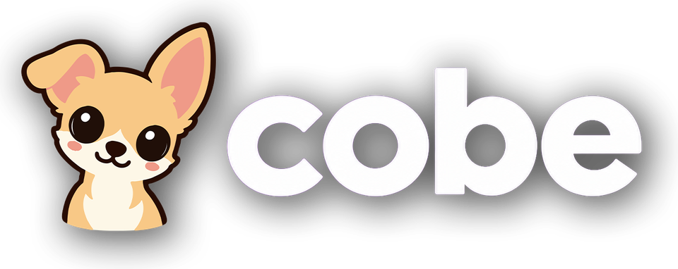

Privacy Policy
Last updated: November 2, 2026
Cobe collects no personal data. Everything you enter stays on your device.
What stays on your device
- Playlists, playlist logins and media server logins. On Apple TV, iPhone and iPad, passwords are kept in Apple's secure keychain, and the addresses of your channels and films are saved in the app's settings. On Fire TV, logins and these addresses are saved in the app's private storage, which is not encrypted and is not backed up. These addresses can contain your playlist login, because that is how many playlists are built.
- Portal playlists use the MAC address you enter. It is saved on your device and sent to that portal to load and play your channels.
- Your Adults PIN.
- Favorites, Continue watching, reminders, profiles and settings.
- On Fire TV, your recordings, on the Fire TV or on a USB drive you choose. Anyone who has that drive can read the videos.
- On Fire TV, a small private file with crash notes. It is not sent anywhere.
What we do not do
- No account with us, no tracking, no advertising, no analytics, no data sold or shared.
- We have no server of our own that receives your data.
Who the app talks to, and why
| Who | Why | What is sent |
|---|---|---|
| The services behind your playlists | To load your channels, films and series and play them | Your playlist login, as part of the address you entered |
| A portal, only if you add one | To load your channels, films and series and play them | Your portal login and your device's MAC address |
| Your shared folders and media servers (NAS, computer, Jellyfin, Emby, Plex) | To list and play your own files | Your server login |
| Plex (plex.tv), only if you add Plex | To link your Plex account and find your servers | A link code, then your Plex sign-in token |
| TVmaze (tvmaze.com) | Series pictures and stories | The series title |
| On Fire TV, TVmaze and Apple's iTunes search | Posters for your recordings | The recording's title |
| Wikipedia (wikipedia.org) | Film facts, pictures and box office lists | The film title |
| Wikidata (wikidata.org) | Film countries and genres | The film title |
| Apple (itunes.apple.com) | The public chart of popular films | Nothing personal; your country for the right chart |
| Picture addresses in your playlists, and TMDB (image.tmdb.org) for sharper copies of TMDB posters | Posters and channel logos | Nothing personal |
These services see your device's internet address, as with any website you visit. Their own privacy policies apply.
Adding a playlist from your phone (Fire TV)
While the Add screen is open, the Fire TV runs a small page on your home network, so you can type a playlist on your phone. Its connection is not encrypted. Your login goes from your phone to the Fire TV, not to us.
iCloud
On Apple TV, iPhone and iPad, if you are signed in to iCloud, your settings and playlists may be backed up to your own iCloud account, so they come back on a new device. Passwords and your PIN are not in this backup. If you use iCloud Keychain, Apple may keep your passwords there, end-to-end encrypted. We cannot see any of this data. On Fire TV, Cobe makes no backup.
Purchases
Subscriptions and purchases are handled by Apple, or by Amazon on Fire TV. We do not receive your payment details.
Children
Cobe collects no data from anyone, including children.
Questions or deletion
All data is deleted when you delete the app. Questions: peter.verhoeven@xlamediagroup.com.